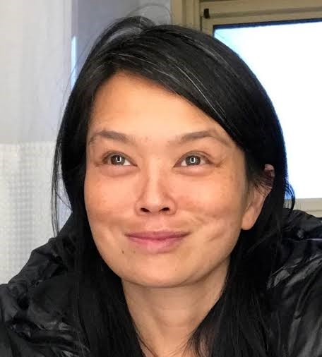
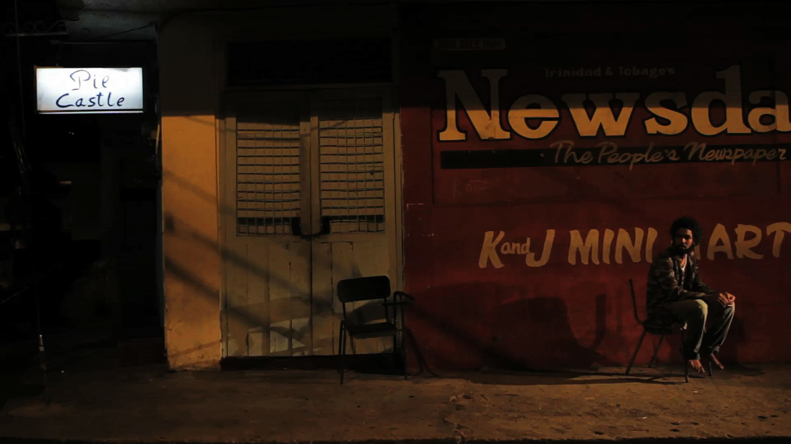
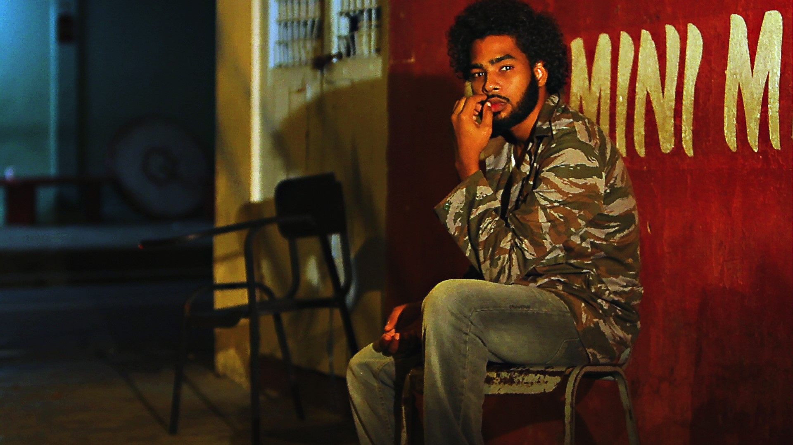
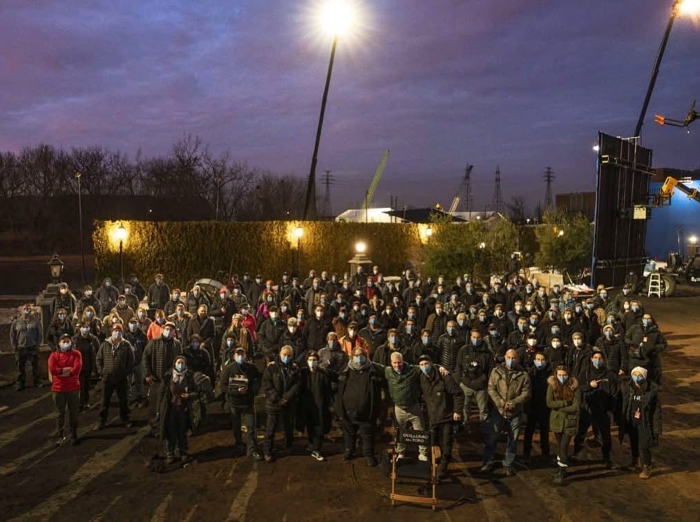
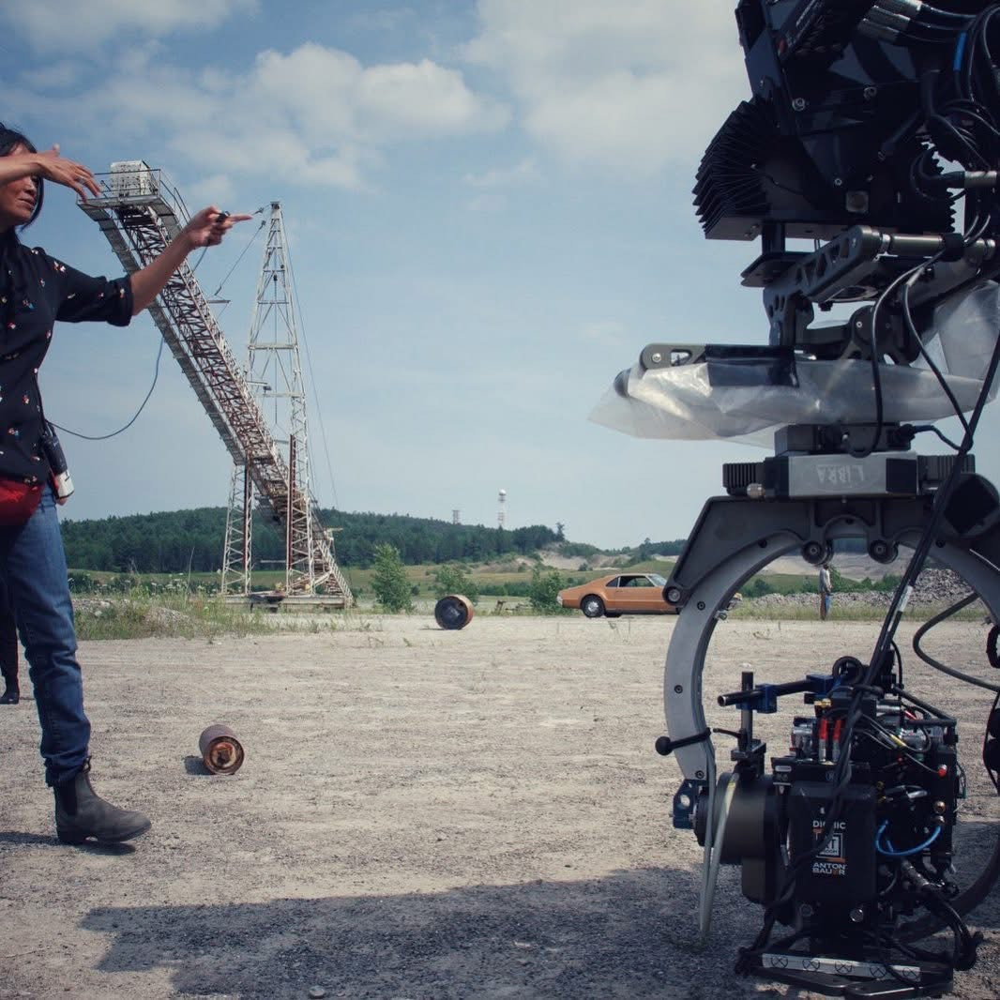
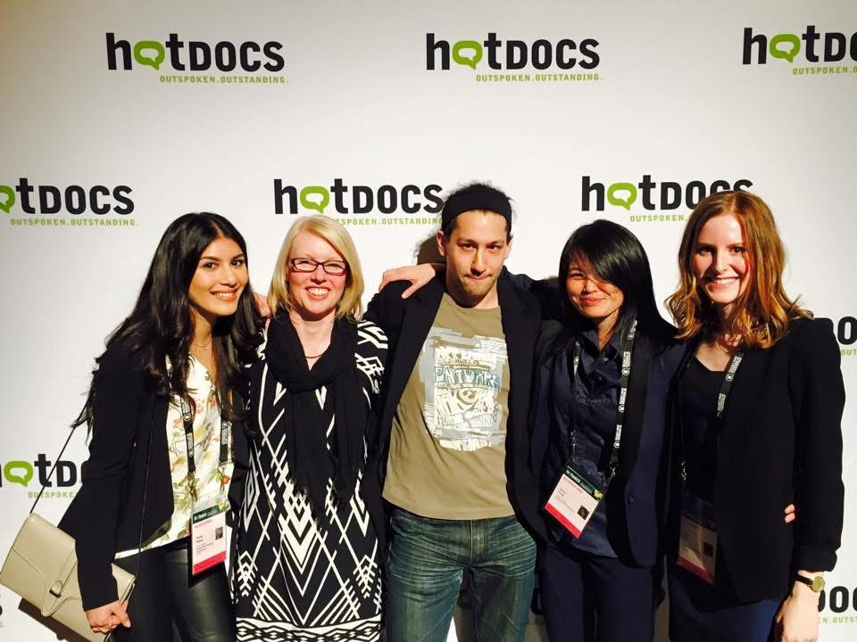

Janine's second short film, 4AM, also had its International Premiere at TIFF (Toronto International Film Festival)
in 2011. Since then 4AM has screened at TIFF Next Wave Film Festival, TIFF Outreach Program, Reel Canada, VAFF,
London UK and the Rio Loco Cultural Festival in Toulouse France 2013.
Janine's first feature documentary, LA GAITA was awarded the PEOPLE'S CHOICE AWARD for
Best Documentary Feature and the Special Jury Mention Award. LA GAITA was nationally broadcast
on TV4, CN3 and Gayelle TV.
Janine Fung
Bio
Award-winning Director, Writer and Producer Janine Fung was born in Trinidad and grew up in Toronto. Her first dramatic short film, LEFTOVERS, premiered at TIFF (Toronto International Film Festival) and aired on WTN (Women's Television Network) in Canada. LEFTOVERS screened worldwide for twenty years, in Toronto, NYC, Helsinki, London, Hong Kong, LA, San Francisco, Chicago, Trinidad, Miami and Paris to mention a few. It was also used as a teaching tool in some universities.



In 2015, Janine was selected for the DOC Institute Breakthrough Emerging Producers Mentorship
Program. Her project featured nonfiction project BECOMING THE BLUE, which was selected for DEAL MAKER
at Hot Docs 2015.
Janine's films have screened in such places as LA, New York, Toronto, Paris, London, San Francisco,
Berlin, Munich, Helsinki, Trinidad, Toulouse, Amsterdam, Miami, Montreal, Seattle and Hong Kong, to mention a few.

Her first dramatic feature, THE DOCTOR'S DAUGHTER OR THE SECRET AND THE LIE, premiered at the San Francisco LGBT International
Film Festival.
From there, it went onto LA, screening at Frame Line International Film Festival, Toronto Caribbean Tales Film Festival,
Atlanta Georgia, Trinidad & Tobago Film Festival, Croatia and then Germany: Berlin, Munich, Frankfurt and Bonn.
After living in Trinidad for eight years (2006-2013), the country of her birth, Janine decided to join the Director’s Guild of
Canada in Toronto and work as an Assistant Director on Director Guillermo Del Toro’s dramatic, psycho-thriller film,
NIGHTMARE ALLEY, starring Bradley Cooper, Cate Blanchet and Rooney Mara. She has also worked as an Assistant Director for series such as STAR TREK, LAW AND ORDER TORONTO and Netflix’s
CABINET OF CURIOSITIES to mention a few.
PROJECTS IN DEVELOPMENT
THE MOTORHOME (fiction film, dramatic comedy)


